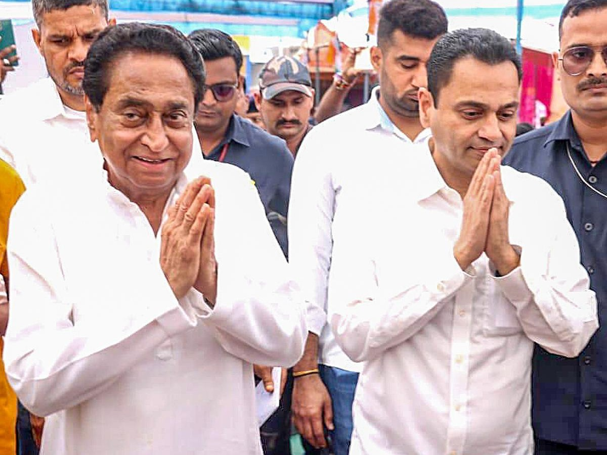

The Heartland Constituency — A Story of Transformation
A district steeped in natural beauty, tribal heritage, and untapped potential — nestled in the heart of central India.
Chhindwara is a sprawling district situated in the southern part of Madhya Pradesh, India's heartland state. Spread across an area of approximately 11,815 square kilometres, it stands as one of the largest districts in the state. The district is cradled by the majestic Satpura mountain range, which lends it a distinct topography of rolling hills, dense deciduous forests, and fertile valleys. Positioned strategically between the Deccan Plateau and the Indo-Gangetic Plain, Chhindwara serves as a natural bridge between northern and southern India.
The district shares its borders with Nagpur (Maharashtra) to the south, Betul to the west, Hoshangabad and Narsinghpur to the north, and Seoni to the east. The Kanhan, Pench, and Kulbehra rivers meander through the landscape, nourishing the soil and sustaining agriculture. The Pench National Park — the very forest believed to have inspired Rudyard Kipling's The Jungle Book — lies partially within the district, adding ecological significance to its geographic allure.
Chhindwara has a population of over 21 lakh (2.1 million), comprising a rich mosaic of communities. It is one of the most prominent tribal-dominated districts in Madhya Pradesh, with the Gond tribe forming a significant portion of the population. The Gonds are among the largest tribal communities in India, known for their vibrant traditions, distinctive art forms, and deep connection to the land and forests.
Beyond the Gond community, the district is home to Korku, Bharia, and other tribal groups, alongside a substantial non-tribal population engaged in agriculture, trade, and government services. This demographic tapestry has created a unique cultural ecosystem where tribal customs blend seamlessly with mainstream Indian traditions, producing festivals, rituals, and social structures that are distinctly Chhindwarian.
The name "Chhindwara" is believed to derive from the Hindi word chhind, referring to the date palm tree (Phoenix sylvestris) that once dotted the region in abundance. Others trace the etymology to "Chhindwada," meaning a narrow gorge, reflecting the terrain's mountainous passes. Historically, the region was part of the Gond kingdom — a powerful tribal empire that ruled much of central India from the 14th to the 18th century.
During British colonial rule, Chhindwara became an administrative centre within the Central Provinces. The district was known for its coal and manganese deposits, which attracted industrial interest. However, despite its natural wealth, the region remained largely underdeveloped through independence and the early decades of the Indian republic. It was this paradox — a land rich in resources yet poor in development — that set the stage for a leader who would dedicate his political career to transforming it.
Chhindwara's cultural landscape is one of vivid contrasts and harmonies. The Gond tribal art, characterised by bold lines, natural pigments, and depictions of flora and fauna, has gained national and international recognition. This art form, traditionally painted on the walls of homes, tells stories of creation, harvest, and reverence for nature.
The region celebrates a calendar rich with festivals. Madai, the largest tribal fair, brings together communities from across the district for days of music, dance, and trade. Dussehra is celebrated with particular grandeur in Chhindwara, with processions and cultural performances unique to the region. The local cuisine reflects the forest bounty — mahua (Madhuca longifolia) flowers, tendu leaves, and a variety of forest produce feature prominently in the traditional diet.
The music traditions of the region are equally distinctive. The Relo and Karma dances, performed during harvest and marriage ceremonies, are accompanied by the rhythmic beats of the mandar drum and the melodious notes of the bansuri. These art forms, preserved through generations, represent the living cultural heritage of Chhindwara.
Chhindwara is not just a constituency for me — it is my family, my home, my life's purpose.
— Kamal NathA relationship forged in trust, sustained by service, and deepened by four decades of shared struggle and triumph.
When Kamal Nath first arrived in Chhindwara in 1980 as a young political aspirant, few could have predicted the depth of the relationship that would develop between this man and this land. Born in Kanpur and educated in elite institutions, Nath could have easily chosen a more comfortable urban constituency. Instead, he chose Chhindwara — a remote, tribal-dominated, underdeveloped district in the interiors of Madhya Pradesh.
The decision was not arbitrary. Kamal Nath saw in Chhindwara a microcosm of India's greatest challenges: poverty, illiteracy, poor infrastructure, and the marginalisation of tribal communities. He also saw its immense potential — a land blessed with mineral resources, fertile soil, abundant water, and a hardworking, resilient population that only needed a champion in the corridors of power.
From his very first campaign, Nath adopted an approach that would become his hallmark: direct engagement with the people. He walked through villages, sat in tribal huts, shared meals with farmers, and listened to grievances that had gone unheard for decades. This was not political theatre — it was the genuine building of a relationship that would endure for over four decades.
Over the years, the people of Chhindwara bestowed upon Kamal Nath the affectionate title of "Maharaja of Chhindwara" — not in the feudal sense, but as an acknowledgement of his complete identification with the district. The term reflects both admiration and ownership: Nath does not merely represent Chhindwara; in the hearts of its people, he is Chhindwara.
This identification goes beyond electoral politics. Kamal Nath has been present at every major crisis, every natural disaster, every moment of celebration in the district. Whether it was coordinating flood relief, personally overseeing drought management, or attending local festivals and ceremonies, his presence has been a constant in the lives of Chhindwara's residents.
The depth of the Nath family's commitment to Chhindwara is further evidenced by the political journey of Nakul Nath, Kamal Nath's son. In 2019, Nakul Nath contested and won the Chhindwara Lok Sabha seat, taking forward the legacy of his father. This transition represents not just a political handover but a continuation of the family's covenant with the people of Chhindwara.
Kamal Nath himself transitioned to state-level politics, eventually becoming the Chief Minister of Madhya Pradesh in 2018 — a role that allowed him to implement his vision for Chhindwara and the entire state on a far larger canvas. Even as Chief Minister, his attention to Chhindwara's development remained unwavering, leading to several significant projects and initiatives for the district.
What sets Kamal Nath apart from many political leaders is his genuine understanding of tribal issues. He has consistently championed the rights of tribal communities in Parliament and in government, advocating for forest rights, land rights, and cultural preservation. His interventions have ensured that development in Chhindwara does not come at the cost of tribal identity or displacement.
Under his influence, Chhindwara has seen the implementation of the Forest Rights Act in letter and spirit, ensuring that tribal families receive legal recognition of their traditional forest lands. He has pushed for tribal self-governance mechanisms, educational opportunities specifically designed for tribal youth, and healthcare facilities that are sensitive to tribal cultural practices.
Unlike many politicians who visit their constituencies only during elections, Kamal Nath has maintained an extraordinarily regular presence in Chhindwara throughout his career. His visits are not ceremonial stopovers but working trips where he meets with local administrators, inspects development projects, visits schools and hospitals, and holds public grievance sessions.
The personal connection runs deep. Nath is known to remember individual families, to follow up on specific problems raised by ordinary citizens, and to intervene personally when bureaucratic delays threaten essential projects. Stories abound of midnight calls to district officials, personal financial assistance to families in crisis, and quiet acts of generosity that never make the news.
This personalised approach to governance has created a model that political scientists have studied and commentators have marvelled at. In an era of increasingly transactional politics, the Kamal Nath–Chhindwara relationship stands as an example of what sustained, genuine engagement between a leader and his constituency can achieve.
The relationship between Kamal Nath and Chhindwara transcends the political. At every election, the people of Chhindwara have voted not just for a candidate or a party, but for a man they consider their own. During festivals like Diwali and Holi, Nath's residence in Chhindwara becomes a gathering point for people from across the district. Weddings, funerals, and community celebrations regularly feature his presence or that of his family members.
This emotional bond has survived the fiercest political headwinds. In years when the Congress party faced devastating defeats nationally, Chhindwara stood firm. In 2014, when the Modi wave swept through India and Congress was reduced to its lowest-ever seat count, Kamal Nath won Chhindwara. That single result spoke volumes about the depth of the personal bond between leader and people — a bond that no national wave could erode.
Nine consecutive Lok Sabha victories from Chhindwara — an unprecedented feat in Indian parliamentary democracy that speaks to an unshakeable mandate from the people.
From one of Madhya Pradesh's most neglected districts to a model constituency — the story of Chhindwara's development under Kamal Nath's sustained leadership is one of India's most compelling narratives of democratic transformation.
When Kamal Nath first represented Chhindwara in 1980, the district was virtually cut off from the rest of Madhya Pradesh and the nation. Most villages had no paved roads, the nearest national highway was hours away, and during the monsoon months, entire tehsils became inaccessible.
Under his leadership, Chhindwara witnessed a complete transformation of its road network. The development of National Highway connectivity linking Chhindwara to Nagpur, Jabalpur, and Bhopal opened up the district to commerce and opportunity. State highways were expanded and upgraded, connecting major towns within the district.
The Pradhan Mantri Gram Sadak Yojana (PMGSY) was implemented with exceptional vigour in Chhindwara, with Nath personally monitoring the construction of rural roads. Thousands of kilometres of all-weather roads were built, connecting remote tribal villages to tehsil headquarters. The road network transformed not just connectivity but the entire economic landscape of the district — enabling farmers to transport produce to markets, students to access schools, and patients to reach hospitals.
The construction of key bridges over the Kanhan and Pench rivers further integrated the district's internal connectivity, reducing travel times between major population centres by hours. Today, Chhindwara's road infrastructure is among the best in central India — a far cry from the mud tracks that characterised the district four decades ago.
Education has been a cornerstone of Kamal Nath's development vision for Chhindwara. From a district with alarmingly low literacy rates, Chhindwara has been transformed into an educational hub for the entire region.
The establishment of engineering colleges, including the Government Engineering College, brought technical education to a district where young people previously had to travel hundreds of kilometres for higher studies. A medical college was established, producing doctors who serve not just Chhindwara but the entire region.
Multiple Industrial Training Institutes (ITIs) and polytechnics were set up to provide vocational training, particularly to tribal youth, equipping them with skills for employment in the modern economy. School infrastructure underwent massive improvements — new buildings, computer labs, libraries, and sports facilities were developed across the district.
The focus on girls' education was particularly impactful. Residential schools for tribal girls, scholarship programmes, and transport facilities removed barriers that had historically prevented girls from accessing education. The district's literacy rate climbed significantly over the decades, with female literacy showing the most dramatic improvement — a testament to targeted interventions and sustained commitment.
Healthcare infrastructure in Chhindwara has undergone a revolutionary transformation. The District Hospital was upgraded to a multi-specialty facility with modern diagnostic equipment, operation theatres, and specialist departments. What was once a basic healthcare facility now serves as a regional medical centre, reducing the need for patients to travel to Nagpur or Bhopal for treatment.
Primary Health Centres (PHCs) were established in every block, and Community Health Centres (CHCs) were upgraded to provide emergency services, maternal care, and basic surgical facilities. Mobile health units were deployed to reach remote tribal villages, providing basic healthcare to populations that had never seen a doctor.
The establishment of the medical college not only provided tertiary healthcare but also created a pipeline of medical professionals trained in the district. AYUSH centres were set up to integrate traditional medicine systems, particularly important given the tribal population's familiarity with herbal and traditional healing practices.
Maternal and child health indicators showed significant improvement, with institutional deliveries rising dramatically and infant mortality rates declining. Immunisation coverage expanded to reach even the most remote habitations, saving thousands of young lives.
Kamal Nath's background as Union Minister of Commerce and Industry gave him a unique perspective on economic development, which he applied with particular energy in Chhindwara. The establishment of industrial areas in and around Chhindwara city attracted manufacturing units, creating employment opportunities for thousands of local residents.
One of the most ambitious initiatives was the development of an IT Park in Chhindwara — a bold move for a largely rural district. The IT park aimed to bring knowledge-economy jobs to the district, preventing the brain drain of educated youth to metropolitan cities. The facility attracted software companies and BPO operations, providing white-collar employment opportunities previously unimaginable in a district like Chhindwara.
Chhindwara's fame as the "Orange City" was leveraged through the development of orange processing and packaging facilities. The district is one of India's largest producers of Nagpur oranges (a variety of mandarin), and the establishment of cold storage chains, juice processing units, and modern packaging facilities added value to the orange crop and improved farmer incomes significantly.
Mineral-based industries were developed to utilise the district's rich deposits of coal, manganese, and limestone. These industries created a secondary economy of ancillary units, transport services, and support businesses that multiplied the employment impact manifold.
Agriculture remains the backbone of Chhindwara's economy, and its transformation has been central to the district's overall development story. Major irrigation projects were implemented, including the construction of medium and minor dams, canal networks, and lift irrigation schemes that brought assured water supply to thousands of hectares of previously rain-dependent farmland.
Modern farming techniques were introduced through agricultural extension services, demonstration farms, and farmer training centres. The adoption of high-yield crop varieties, integrated pest management, and soil health management improved productivity significantly. Drip irrigation and sprinkler systems were promoted, particularly for horticulture crops, reducing water wastage and improving yields.
The development of market infrastructure — modern mandis (agricultural markets), electronic trading platforms, and farmer-producer organisations — ensured that farmers received fair prices for their produce. Cold storage facilities for perishable crops, particularly oranges, reduced post-harvest losses and extended the marketing window.
The orange cultivation programme became a model for the country. Chhindwara's oranges, already renowned for their quality, gained further prominence through branding initiatives, quality certification, and export facilitation. The annual orange festival became a significant cultural and commercial event, showcasing Chhindwara's agricultural prowess to the nation.
Rural electrification was pursued with missionary zeal. From a district where vast stretches of the countryside had no electricity, Chhindwara achieved near-complete electrification. Every village, every hamlet, every tribal settlement was connected to the grid, bringing light — both literal and metaphorical — to communities that had lived in darkness for generations.
The electrification programme was complemented by improvements in power supply reliability. Transformer upgrades, new substations, and improved distribution networks reduced outages and ensured quality power supply for domestic, agricultural, and industrial consumers.
Water supply projects transformed access to clean drinking water across the district. Multi-village water supply schemes, bore wells, and hand pump installations ensured that potable water was available within reasonable distance for every habitation. The Pench river water supply scheme brought piped water to Chhindwara city and surrounding areas.
Urban development initiatives modernised Chhindwara city itself — improved roads, storm water drainage, sewerage systems, parks, and public spaces transformed the district headquarters into a modern, liveable town. The development of a bus terminal, commercial complexes, and civic amenities gave the city an infrastructure that befitted a rapidly developing district.
A district that has emerged as a model of democratic development — where sustained political commitment has yielded generational transformation.
Today's Chhindwara bears little resemblance to the neglected, disconnected district of 1980. The transformation is visible at every turn: smooth highways where there were once mud tracks, bustling markets where there was once subsistence farming, modern hospitals where there were once untreated ailments, and schools brimming with students where there was once widespread illiteracy.
The district's Human Development Index has improved significantly over the decades, with gains in literacy, life expectancy, and income levels. While challenges remain — as they do in every developing region — the trajectory is unmistakably upward. The gap between Chhindwara and more developed districts has narrowed substantially, and in several indicators, the district now performs above the state average.
The digital revolution has reached Chhindwara as well. Internet connectivity, mobile phone penetration, and digital literacy have expanded rapidly, connecting the district's youth to global opportunities. The IT park, online trading platforms for agricultural produce, and e-governance initiatives have brought the benefits of technology to a previously underserved region.
Chhindwara's ecological assets — the Pench National Park, the Satpura forests, and the district's natural beauty — are increasingly being recognised as economic opportunities through sustainable tourism. Eco-tourism initiatives are creating employment while preserving the environmental heritage that makes the district unique.
The district's agricultural economy continues to evolve, with diversification into high-value crops, organic farming, and agro-processing. The orange brand of Chhindwara now commands premium prices, and the district is emerging as a hub for horticulture, floriculture, and medicinal plant cultivation.
Behind every statistic is a human story. Behind every road is a village connected. Behind every school is a child's future. Behind every hospital is a life saved. The people of Chhindwara are the true measure of this transformation.
The transformation of Chhindwara is not the achievement of one man — it is the collective triumph of a people who believed in their own potential and a leader who refused to let that potential go unrealised.
— Kamal Nath, on four decades of representing Chhindwara